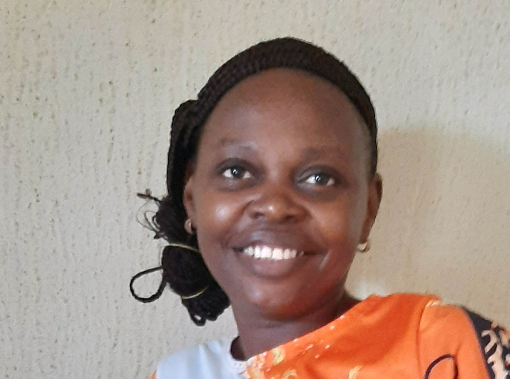

CURRICULUM VITAE
No 62,Adeniyi Phase 3, Baale Street, Meiran Lagos
08028947062
oshineyeoyindamola01@gmail.com

OBJECTIVES
To build an excellent career in a reputable organization, where I can display my potentials to help the organization achieve its objectives.
PERSONAL INFORMATION
Name Oladele Oyindamola Olamide
Date of Birth 16th May, 1983
Sex Female
Status Married
State of Origin Ogun State
EDUCATION
Ekiti State University, Ekiti State
BSc Edu, Biology (First Class) 2018-2021
The Polytechnic Ibadan , Oyo State.
HND Microbiology (Upper Class Division) 2007-2009
OND Science Lab. Tech. (Upper Class Division) 2003-2005
Saint Anne’s School, Ibadan.
Senior Sec. Certificate (SSCE) 1994-2000
Sacred Heart Private School , Ibadan.
Primary School Leaving Certificate 1989-1994
HOBBIES
Travelling
Reading
FAVOURITE MUSIC